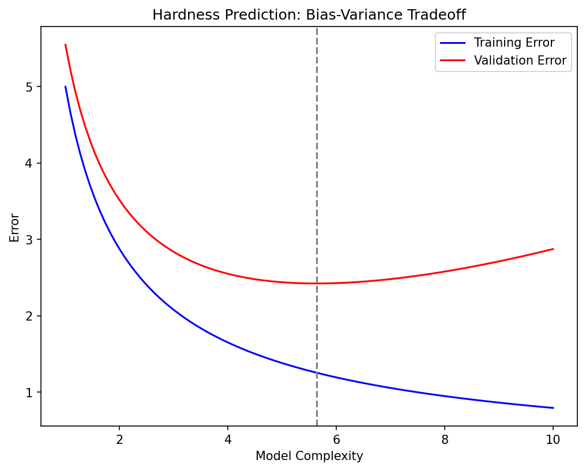
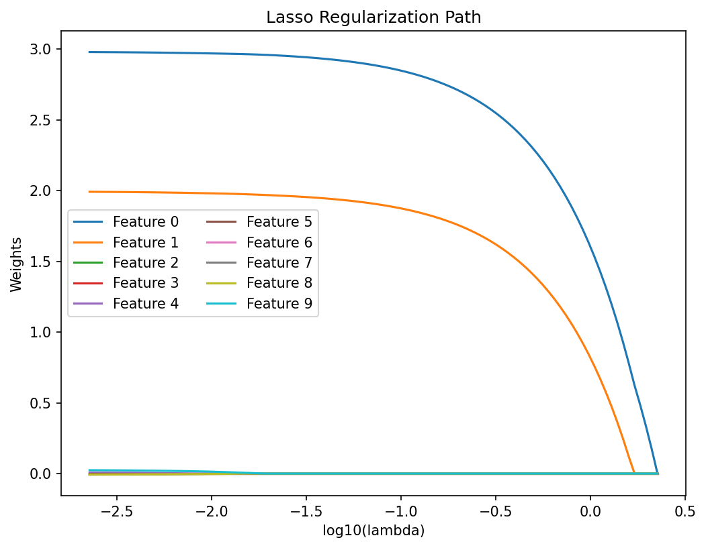
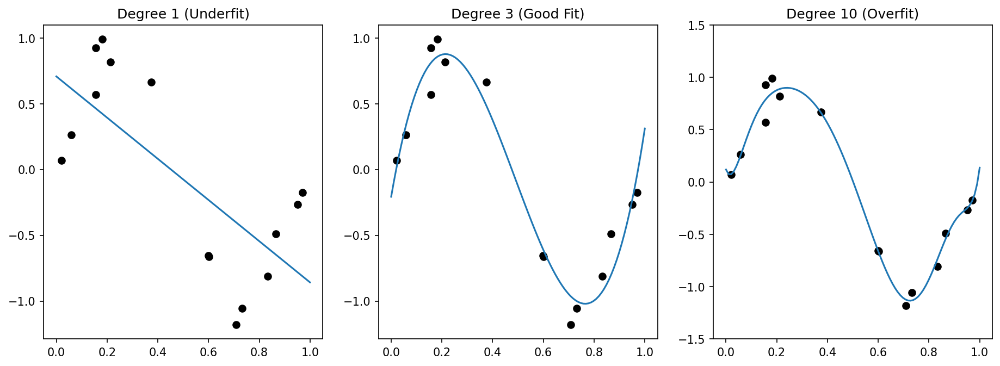

Mathematical Foundations of AI & ML
Unit 7: Generalization, Bias-Variance, and Regularization
Title + Unit 7 positioning
- Units 1–6 built the machinery: loss functions, architectures, backprop, optimization.
- Unit 7 asks the fundamental question: does the model work on data it has never seen?
- Generalization is the central goal of machine learning — everything else is in service of it.
Learning outcomes for Unit 7
By the end of this lecture, students can:
- derive and interpret the bias-variance decomposition of expected prediction error,
- diagnose overfitting vs underfitting from training/validation loss curves,
- formulate Ridge (L2) and Lasso (L1) regularization and explain their geometric effects,
- design a k-fold cross-validation procedure for model selection and hyperparameter tuning.
Recall: ERM from Unit 1
- Empirical Risk Minimization: \(\hat{\mathbf{w}} = \arg\min_{\mathbf{w}} \frac{1}{N}\sum_{i=1}^{N} L(f_{\mathbf{w}}(\mathbf{x}_i), y_i)\).
- We minimize empirical risk (training loss), but we care about population risk (expected loss on new data).
- The gap between these two is the core challenge of learning.
The generalization gap
- Generalization gap = test error − training error.
- A small gap means the model has learned the true pattern.
- A large gap means the model has memorized the training data.
- The gap is not observable during training — we need held-out data to estimate it.
Why generalization is the central goal
- A model that perfectly fits training data but fails on new data is useless in deployment.
- In engineering applications (materials, manufacturing), deployment failure can be costly and dangerous.
- Every design choice — architecture, regularization, optimizer — should be evaluated by its effect on generalization.
Overfitting — definition and visual example
- Overfitting: the model captures noise and idiosyncrasies of the training data instead of the underlying signal.
- Symptom: training error is very low, test error is high.
- Visual: a high-degree polynomial passes through every training point but oscillates wildly between them.
Underfitting — definition and visual example
- Underfitting: the model is too simple to capture the structure in the data.
- Symptom: both training and test error are high.
- Visual: a straight line fit to clearly nonlinear data misses the pattern entirely.
The complexity spectrum
- Low complexity (few parameters, simple model): high bias, low variance → underfitting.
- High complexity (many parameters, flexible model): low bias, high variance → overfitting.
- The sweet spot: enough complexity to capture the signal, not so much that it captures noise.
Interactive: The Complexity Spectrum
//| echo: false
//| panel: input
viewof polyDegree = Inputs.range([1, 15], {value: 1, step: 1, label: "Polynomial Degree (Complexity)"})Training Data: 15 samples Noise: \(\sigma = 0.2\)
//| echo: false
html`
<div style="margin-top: 20px;">
<strong>Train MSE:</strong> ${mse.train.toFixed(3)}<br>
<strong>Test MSE:</strong> ${mse.test.toFixed(3)}
</div>
`//| echo: false
d3 = require("d3@7")
d3_reg = require("d3-regression@1")
seed = 42
randomVal = d3.randomNormal.source(d3.randomLcg(seed))(0, 0.2)
trueFunc = (x) => Math.sin(1.5 * Math.PI * x)
points = {
const train = Array.from({length: 15}, (_, i) => {
let x = (i+0.5) / 15 + (d3.randomUniform.source(d3.randomLcg(seed+i))() - 0.5) * 0.05;
return {x: x, y: trueFunc(x) + randomVal(), type: "train"};
});
const test = Array.from({length: 100}, (_, i) => {
let x = (i+0.5) / 100;
return {x: x, y: trueFunc(x) + randomVal(), type: "test"};
});
return [...train, ...test];
}
trainPts = points.filter(d => d.type === "train")
testPts = points.filter(d => d.type === "test")
polyModel = {
try {
return d3_reg.regressionPoly().x(d => d.x).y(d => d.y).order(polyDegree)(trainPts);
} catch(e) {
// fallback if d3-regression fails for very high degrees/collinearity
return {predict: (x) => 0};
}
}
mse = {
const trainMSE = d3.mean(trainPts, d => Math.pow(polyModel.predict(d.x) - d.y, 2));
const testMSE = d3.mean(testPts, d => Math.pow(polyModel.predict(d.x) - d.y, 2));
return {train: trainMSE || 0, test: testMSE || 0};
}
Plot.plot({
width: 1000,
height: 600,
y: {domain: [-2, 2], grid: true},
x: {domain: [0, 1], grid: true},
color: {domain: ["train", "test"], range: ["red", "steelblue"]},
marks: [
Plot.dot(points, {x: "x", y: "y", fill: "type", fillOpacity: 0.8, r: d => d.type === "train" ? 6 : 3}),
Plot.line(d3.range(0, 1.01, 0.01), {x: d => d, y: d => trueFunc(d), stroke: "gray", strokeDasharray: "4,4", strokeWidth: 2, title: "True Function"}),
Plot.line(d3.range(0, 1.01, 0.01).map(x => ({x: x, y: polyModel.predict(x)})), {x: "x", y: "y", stroke: "orange", strokeWidth: 4, title: "Fitted Model", clip: true})
]
})Detecting overfitting in practice
- Plot training loss and validation loss over training epochs.
- Healthy: both decrease and converge.
- Overfitting: training loss continues to decrease while validation loss starts increasing.
- The divergence point suggests when to stop training (early stopping) [@neuer2024machine].
Engineering consequence: false confidence
- A model with 99% training accuracy may have 60% test accuracy.
- In materials science: a property-prediction model that overfits may suggest alloy compositions that fail experimentally.
- Perfect training fit can mask catastrophic deployment failure — always validate on held-out data.
Setup: expected prediction error
- Consider the expected loss over both the training data \(\mathcal{D}\) and a new test point \((\mathbf{x}, y)\):
\[ \text{EPE}(\mathbf{x}) = \mathbb{E}_{\mathcal{D}} \mathbb{E}_{y|\mathbf{x}} \big[ (y - \hat{f}_{\mathcal{D}}(\mathbf{x}))^2 \big] \]
- This averages over all possible training sets and all possible true outputs at \(\mathbf{x}\).
Decomposing squared error — step 1
- Add and subtract the expected prediction \(\mathbb{E}_{\mathcal{D}}[\hat{f}(\mathbf{x})]\):
\[ y - \hat{f}(\mathbf{x}) = \underbrace{(y - f(\mathbf{x}))}_{\text{noise}} + \underbrace{(f(\mathbf{x}) - \mathbb{E}_{\mathcal{D}}[\hat{f}(\mathbf{x})])}_{\text{bias}} + \underbrace{(\mathbb{E}_{\mathcal{D}}[\hat{f}(\mathbf{x})] - \hat{f}(\mathbf{x}))}_{\text{variance term}} \]
Decomposing squared error — step 2
- Square the expression and take expectations.
- Cross-terms vanish because noise is independent of the model and \(\mathbb{E}_{\mathcal{D}}[\hat{f}(\mathbf{x}) - \mathbb{E}_{\mathcal{D}}[\hat{f}(\mathbf{x})]] = 0\).
- The three surviving terms give us the decomposition.
The three components
\[ \text{EPE}(\mathbf{x}) = \underbrace{\sigma^2_{\text{noise}}}_{\text{irreducible}} + \underbrace{\big(\mathbb{E}_{\mathcal{D}}[\hat{f}(\mathbf{x})] - f(\mathbf{x})\big)^2}_{\text{Bias}^2} + \underbrace{\mathbb{E}_{\mathcal{D}}\big[(\hat{f}(\mathbf{x}) - \mathbb{E}_{\mathcal{D}}[\hat{f}(\mathbf{x})])^2\big]}_{\text{Variance}} \]
- Bias²: systematic error from model assumptions.
- Variance: sensitivity to the specific training set.
- Noise: irreducible — the Bayes error [@bishop2006pattern].
Bias — interpretation
- Bias measures how far the average prediction (over all possible training sets) is from the truth.
- High bias means the model class cannot represent the true function.
- Example: fitting a linear model to quadratic data — no amount of data will fix the systematic error.
- Bias is a property of the model family, not the specific training set.
Variance — interpretation
- Variance measures how much the prediction changes when we draw a different training set.
- High variance means the model is too sensitive to the particular data it was trained on.
- Example: a degree-15 polynomial changes dramatically with each new training sample.
- Variance is controlled by model complexity and training set size.
Intrinsic noise / Bayes error
- The noise term \(\sigma^2\) represents inherent randomness in the data-generating process.
- No model — no matter how complex — can reduce the error below this floor.
- In materials science: measurement noise, batch-to-batch variability, uncontrolled environmental factors.
- Estimating \(\sigma^2\) helps set realistic performance expectations.
The bias-variance tradeoff
- Increasing complexity: bias decreases (model can fit more patterns), variance increases (model fits noise too).
- Decreasing complexity: variance decreases (model is stable), bias increases (model misses structure).
- Optimal complexity minimizes the sum Bias² + Variance.
- This is the most fundamental tradeoff in machine learning [@murphy2012machine].
Visual: U-shaped total error curve
%%| align: center
graph LR
C[Model Complexity] --> B[Bias decreases]
C --> V[Variance increases]
B --> E[Total Error]
V --> E
N[Noise] --> E
style E fill:#f9f,stroke:#333,stroke-width:4px
style C fill:#ccf,stroke:#333- Plot Bias², Variance, and total error against model complexity.
- Bias² decreases monotonically with complexity.
- Variance increases monotonically with complexity.
- Total error = Bias² + Variance + noise: a U-shaped curve with a minimum at optimal complexity.
Interactive: Bias and Variance Demystified
//| echo: false
//| panel: input
viewof bvDegree = Inputs.range([1, 12], {value: 3, step: 1, label: "Model Complexity (Degree)"})
viewof numSamples = Inputs.range([5, 50], {value: 10, step: 5, label: "Number of Datasets"})
viewof showAverage = Inputs.toggle({label: "Show Expected Fit (Bias)", value: false})- Each faint blue curve is trained on a different dataset sampled from the true distribution.
- The spread of these curves represents Variance.
- The distance from the red average curve to the true function represents Bias.
//| echo: false
bvDatasets = {
const sets = [];
for(let i=0; i<numSamples; i++) {
const rng = d3.randomNormal.source(d3.randomLcg(seed * 10 + i))(0, 0.4);
const pts = Array.from({length: 12}, (_, j) => {
let x = (j+0.5)/12 + (d3.randomUniform.source(d3.randomLcg(seed * 100 + i*12 + j))() - 0.5) * 0.05;
return {x: x, y: trueFunc(x) + rng()};
});
sets.push(pts);
}
return sets;
}
bvModels = bvDatasets.map(pts => d3_reg.regressionPoly().x(d=>d.x).y(d=>d.y).order(bvDegree)(pts))
bvLines = bvModels.flatMap((model, i) => {
return d3.range(0, 1.05, 0.05).map(x => ({x: x, y: model.predict(x), lineId: i, type: "individual"}));
})
bvAverageLine = {
const xs = d3.range(0, 1.05, 0.05);
return xs.map(x => {
const sum = bvModels.reduce((acc, m) => acc + m.predict(x), 0);
return {x: x, y: sum / numSamples, type: "average"};
});
}
Plot.plot({
width: 1000,
height: 600,
y: {domain: [-2, 2], grid: true},
x: {domain: [0, 1], grid: true},
marks: [
Plot.line(d3.range(0, 1.01, 0.01), {x: d => d, y: d => trueFunc(d), stroke: "gray", strokeDasharray: "4,4", strokeWidth: 3, title: "True Function"}),
Plot.line(bvLines, {x: "x", y: "y", z: "lineId", stroke: "steelblue", strokeOpacity: 0.2, strokeWidth: 2, clip: true}),
showAverage ? Plot.line(bvAverageLine, {x: "x", y: "y", stroke: "red", strokeWidth: 5, strokeDasharray: "2,2", title: "Average Fit", clip: true}) : null
]
})Example: polynomial regression
- Degree 1: high bias (line cannot capture curvature), low variance → underfitting.
- Degree 3–5: moderate bias and variance → good fit.
- Degree 15: low bias (passes through training points), high variance (oscillates wildly) → overfitting.
- The optimal degree depends on the data: amount of noise, sample size, true function complexity.
Example: Ridge regression and the tradeoff
- Ridge regression with regularization parameter \(\lambda\):
- High \(\lambda\): heavy shrinkage → high bias, low variance.
- Low \(\lambda\): minimal shrinkage → low bias, high variance.
- \(\lambda\) acts as a complexity knob that traces out the bias-variance tradeoff.
- Optimal \(\lambda\) minimizes total MSE, not training error [@murphy2012machine].
Checkpoint: why is the MLE not always best?
- Maximum Likelihood Estimation is unbiased but can have high variance.
- A biased estimator (MAP / regularized) can achieve lower total MSE.
- The key insight: introducing a small bias can yield a large variance reduction.
- This is the mathematical justification for regularization.
Regularization — the key idea
- Add a penalty to the loss function that discourages unnecessary complexity:
\[ J_{\text{reg}}(\mathbf{w}) = \underbrace{\frac{1}{N}\sum_{i=1}^{N} L(\hat{y}_i, y_i)}_{\text{data fit}} + \underbrace{\lambda \cdot \Omega(\mathbf{w})}_{\text{complexity penalty}} \]
- The penalty \(\Omega(\mathbf{w})\) grows with model complexity.
- \(\lambda > 0\) controls the strength of regularization.
Regularized ERM
- The regularized optimization problem:
\[ \hat{\mathbf{w}} = \arg\min_{\mathbf{w}} \left[ R_N(\mathbf{w}) + \lambda \, \Omega(\mathbf{w}) \right] \]
- \(\lambda = 0\): no regularization (pure ERM).
- \(\lambda \to \infty\): penalty dominates — model collapses to the simplest possible solution.
- Choosing \(\lambda\) is a model selection problem, not a parameter estimation problem.
Ridge regression (L2 penalty)
- Penalty: \(\Omega(\mathbf{w}) = \|\mathbf{w}\|_2^2 = \sum_j w_j^2\).
- Loss:
\[ L_{\text{ridge}} = \sum_{i=1}^{N}(\hat{y}_i - y_i)^2 + \lambda \|\mathbf{w}\|_2^2 \]
- Effect: shrinks all coefficients toward zero, but none exactly to zero.
- Equivalent to a Gaussian prior on weights in Bayesian interpretation.
Ridge regression — closed-form solution
\[ \hat{\mathbf{w}}_{\text{ridge}} = (\mathbf{X}^\top\mathbf{X} + \lambda\mathbf{I})^{-1}\mathbf{X}^\top\mathbf{y} \]
- Adding \(\lambda\mathbf{I}\) makes the matrix always invertible (even if \(\mathbf{X}^\top\mathbf{X}\) is singular).
- This stabilizes the solution when features are correlated or \(p > N\).
- The closed form connects regularization directly to linear algebra [@mcclarren2021machine].
Ridge regression — geometric view
- The unconstrained optimum lies at the OLS solution.
- Ridge constrains the solution to lie within a sphere \(\|\mathbf{w}\|_2^2 \leq t\).
- The regularized solution is the point on the sphere closest to the OLS solution.
- Contour plot: elliptical loss contours intersect the circular constraint region.
Lasso regression (L1 penalty)
- Penalty: \(\Omega(\mathbf{w}) = \|\mathbf{w}\|_1 = \sum_j |w_j|\).
- Loss:
\[ L_{\text{lasso}} = \sum_{i=1}^{N}(\hat{y}_i - y_i)^2 + \lambda \|\mathbf{w}\|_1 \]
- Key property: Lasso can set coefficients exactly to zero — it performs variable selection.
Lasso — geometric view and sparsity
- The L1 constraint region is a diamond (in 2D) or cross-polytope (in higher dimensions).
- The diamond has corners that lie on coordinate axes.
- Loss contours are more likely to intersect a corner → some coefficients become exactly zero.
- This geometric property is why L1 promotes sparsity while L2 does not [@mcclarren2021machine].
Interactive Geometry: Ridge vs Lasso
//| echo: false
//| panel: input
viewof regType = Inputs.radio(["Lasso (L1)", "Ridge (L2)"], {value: "Lasso (L1)", label: "Regularization Type"})
viewof constraintT = Inputs.range([0.1, 3], {value: 1.5, step: 0.05, label: "Constraint Bound (t)"})- A geometric view of minimizing \(MSE(\mathbf{w})\) subject to \(\Omega(\mathbf{w}) \leq t\).
- In the dual, a smaller \(t\) corresponds to a larger \(\lambda\).
- Notice how the optimal regularized solution (red dot) naturally strikes the corners of the L1 diamond, setting \(w_2=0\) identically.
//| echo: false
constraintRegion = {
if (regType === "Ridge (L2)") {
return d3.range(0, 2 * Math.PI + 0.1, 0.1).map(theta => {
const r = constraintT;
return {w1: r * Math.cos(theta), w2: r * Math.sin(theta)};
});
} else {
return [
{w1: constraintT, w2: 0},
{w1: 0, w2: constraintT},
{w1: -constraintT, w2: 0},
{w1: 0, w2: -constraintT},
{w1: constraintT, w2: 0}
];
}
}
minPointPerfect = {
const unconstrainedLoss = 0;
let inRegion = false;
if (regType === "Ridge (L2)") {
inRegion = (2*2 + 1*1) <= constraintT*constraintT;
} else {
inRegion = (2 + 1) <= constraintT;
}
if (inRegion) return {w1: 2, w2: 1};
let minLoss = Infinity;
let bestW1 = 0, bestW2 = 0;
if (regType === "Ridge (L2)") {
for (let theta = 0; theta < 2*Math.PI; theta += 0.01) {
let w1 = constraintT * Math.cos(theta);
let w2 = constraintT * Math.sin(theta);
let loss = Math.pow(w1 - 2, 2) + 3 * Math.pow(w2 - 1, 2);
if (loss < minLoss) { minLoss = loss; bestW1 = w1; bestW2 = w2; }
}
} else {
const segments = [
{sw1: constraintT, sw2: 0, ew1: 0, ew2: constraintT},
{sw1: 0, sw2: constraintT, ew1: -constraintT, ew2: 0},
{sw1: -constraintT, sw2: 0, ew1: 0, ew2: -constraintT},
{sw1: 0, sw2: -constraintT, ew1: constraintT, ew2: 0}
];
for (const seg of segments) {
for (let alpha = 0; alpha <= 1; alpha += 0.005) {
let w1 = seg.sw1 * (1 - alpha) + seg.ew1 * alpha;
let w2 = seg.sw2 * (1 - alpha) + seg.ew2 * alpha;
let loss = Math.pow(w1 - 2, 2) + 3 * Math.pow(w2 - 1, 2);
if (loss < minLoss) { minLoss = loss; bestW1 = w1; bestW2 = w2; }
}
}
}
if (regType === "Lasso (L1)") {
if (Math.abs(bestW1) < 0.05) { bestW1 = 0; bestW2 = constraintT * Math.sign(bestW2); }
if (Math.abs(bestW2) < 0.05) { bestW2 = 0; bestW1 = constraintT * Math.sign(bestW1); }
}
return {w1: bestW1, w2: bestW2};
}
contourLines = {
const lines = [];
const minLoss = Math.pow(minPointPerfect.w1 - 2, 2) + 3 * Math.pow(minPointPerfect.w2 - 1, 2);
const levels = [0.5, 2, 4, 8, 12, minLoss];
for (const C of levels) {
if (C < 0) continue;
const pts = [];
for (let alpha = 0; alpha <= 2*Math.PI + 0.1; alpha += 0.05) {
pts.push({
w1: 2 + Math.sqrt(C) * Math.cos(alpha),
w2: 1 + Math.sqrt(C/3) * Math.sin(alpha),
level: C,
isMin: Math.abs(C - minLoss) < 0.01
});
}
lines.push(pts);
}
return lines;
}
Plot.plot({
width: 800,
height: 600,
x: {domain: [-2, 3], grid: true, label: "Coefficient w1"},
y: {domain: [-2, 3], grid: true, label: "Coefficient w2"},
marks: [
...contourLines.map(pts =>
Plot.line(pts, {x: "w1", y: "w2", stroke: d => d.isMin[0] ? "red" : "gray", strokeWidth: d => d.isMin[0] ? 3 : 1})
),
Plot.line(constraintRegion, {x: "w1", y: "w2", stroke: "steelblue", fill: "steelblue", fillOpacity: 0.2, strokeWidth: 2}),
Plot.dot([minPointPerfect], {x: "w1", y: "w2", fill: "red", r: 8}),
Plot.dot([{w1: 2, w2: 1}], {x: "w1", y: "w2", fill: "black", r: 5, stroke: "white"}),
Plot.text([{w1: 2, w2: 1.15}], {x: "w1", y: "w2", text: () => "OLS Unconstrained Min", fill: "black"})
]
})Ridge vs Lasso — side-by-side comparison
| Property | Ridge (L2) | Lasso (L1) |
|---|---|---|
| Penalty | \(\sum w_j^2\) | \(\sum \|w_j\|\) |
| Sparsity | No (shrinks all) | Yes (zeroes some) |
| Closed form | Yes | No (requires optimization) |
| Correlated features | Keeps all, shrinks equally | Selects one arbitrarily |
| Best for | Many relevant features | Few relevant features |
- Ridge: Shrinks coefficients toward zero, stabilizes solutions.
- Lasso: Zeroes out coefficients, performs feature selection.
- Guideline: Use Lasso if you expect a sparse underlying signal [@mcclarren2021machine].
Elastic net (brief)
- Combines L1 and L2 penalties:
\[ \Omega(\mathbf{w}) = \alpha \|\mathbf{w}\|_1 + (1 - \alpha) \|\mathbf{w}\|_2^2 \]
- Gets sparsity from L1 and stability from L2.
- Handles correlated feature groups better than pure Lasso.
- \(\alpha\) interpolates between Ridge (\(\alpha = 0\)) and Lasso (\(\alpha = 1\)).
Normalization requirement
- Regularization penalizes coefficient magnitude.
- If features have different scales, the penalty is inconsistent: large-scale features get penalized more.
- Always normalize/standardize features before applying regularization.
- Standard approach: zero mean, unit variance for each feature [@mcclarren2021machine].
Dropout as regularization (neural networks)
- During training, randomly set each neuron’s output to zero with probability \(p\).
- Effect: the network cannot rely on any single neuron → prevents co-adaptation.
- At test time, scale activations by \((1-p)\) to compensate.
- Dropout is equivalent to training an ensemble of \(2^H\) sub-networks (where \(H\) = number of hidden units).
Choosing lambda — preview of cross-validation
- \(\lambda\) is a hyperparameter — it controls model complexity but is not a model parameter.
- It cannot be learned from training data alone (that would just lead to \(\lambda = 0\)).
- We need a principled method to select \(\lambda\): cross-validation.
Train / validation / test — the three roles
- Training set: used to fit model parameters \(\mathbf{w}\).
- Validation set: used to tune hyperparameters (\(\lambda\), architecture, learning rate).
- Test set: used once for final performance evaluation — never used during development.
- Typical split: 60% train / 20% validation / 20% test.
Why we need three sets, not two
- If we use the test set to select \(\lambda\), the reported test performance is optimistically biased.
- The test set must remain untouched until the very end.
- The validation set absorbs the selection bias instead.
- Violation of this principle is one of the most common mistakes in applied ML.
k-fold cross-validation — procedure
- Split data into \(k\) equal folds.
- For each fold \(j = 1, \dots, k\):
- Train on all folds except fold \(j\).
- Evaluate on fold \(j\).
- Average the \(k\) performance estimates:
\[ \text{CV}(k) = \frac{1}{k} \sum_{j=1}^{k} R_{\text{test}}^{(j)} \]
- Common choice: \(k = 5\) or \(k = 10\) [@neuer2024machine].
k-fold cross-validation — variance reduction
- Every data point is used for both training and evaluation (in different folds).
- More efficient use of limited data compared to a single train/validation split.
- The averaged estimate has lower variance than a single hold-out estimate.
- Tradeoff: \(k\) times more expensive computationally.
Leave-one-out CV
- Special case: \(k = N\) (each fold contains exactly one sample).
- Nearly unbiased estimate of generalization error.
- Very high computational cost: \(N\) models must be trained.
- High variance: each estimate is based on a single test point.
- Useful for very small datasets where data cannot be wasted.
Choosing lambda via CV
- For each candidate \(\lambda\), compute the CV error \(\text{CV}(\lambda)\).
- Plot \(\text{CV}(\lambda)\) vs \(\log(\lambda)\).
- Select \(\lambda^*\) at the minimum of the CV curve.
- Alternative: the one-standard-error rule [@murphy2012machine].
The one-standard-error rule
- Compute the standard error of the CV estimate at each \(\lambda\).
- Instead of the absolute minimum, select the simplest model (largest \(\lambda\)) within one SE of the minimum.
- Rationale: if two models have statistically indistinguishable performance, prefer the simpler one.
- This implements Occam’s razor in a principled, data-driven way.
Model selection: complexity vs performance
- Cross-validation is not limited to tuning \(\lambda\).
- Compare entirely different model families: linear, polynomial, neural network, random forest.
- For each model, tune its hyperparameters via inner CV loop.
- Select the model family with the best outer CV performance.
Grouped / stratified CV for materials data
- Standard k-fold assumes IID data — often violated in engineering applications.
- Grouped CV: ensure all measurements from the same sample/batch are in the same fold.
- Stratified CV: ensure each fold has a representative class distribution.
- Ignoring data structure leads to over-optimistic CV estimates.
Checkpoint MCQ slide
Scenario: A student uses the test set to tune \(\lambda\), then reports test set accuracy as the model’s generalization performance. What goes wrong?
- Nothing — this is standard practice.
- The reported accuracy is pessimistically biased.
- The reported accuracy is optimistically biased.
- The model will underfit.
Answer: C — the test set was used for selection, so it no longer provides an unbiased estimate.
Materials example: overfitting in alloy property prediction
- Setting: predicting hardness from 50 compositional features using only 200 samples.
- Without regularization: the model memorizes training data and predicts poorly on new alloys.
- With Ridge regularization (\(\lambda\) selected via 5-fold CV): test error drops by 40%.
- Lesson: when \(p/N\) is large, regularization is not optional — it is essential.

Materials example: Lasso for identifying governing features
- Starting from 100 candidate features (composition, processing, microstructure).
- Lasso with increasing \(\lambda\) progressively zeros out irrelevant features.
- The surviving features align with known physical mechanisms (grain size, carbon content, cooling rate).
- Lasso provides both prediction and interpretability.

Materials example: polynomial models for process-property curves
- A high-degree polynomial captures batch-to-batch noise in sintering temperature vs density data.
- A low-degree polynomial misses the genuine nonlinearity (plateau near full density).
- Cross-validation identifies degree 3 as the sweet spot for this dataset.
- This is the bias-variance tradeoff in action on real engineering data.

Lecture-essential vs exercise content split
- Lecture: bias-variance decomposition derivation, regularization formulation, geometric interpretation, CV design, model selection principles.
- Exercise: polynomial overfitting demo, \(\lambda\) sweeps for Ridge vs Lasso, CV implementation in Python, materials feature selection.
Exam-aligned summary: 10 must-know statements
- Generalization gap = test error − training error.
- Overfitting: the model learns noise, not signal.
- MSE = Bias² + Variance + irreducible noise.
- Bias decreases and variance increases with model complexity.
- Ridge (L2) shrinks all weights; Lasso (L1) sets some to zero.
- Regularization strength \(\lambda\) must be tuned, not learned from training data.
- Cross-validation provides an unbiased estimate of generalization error.
- Train / validation / test roles must never be mixed.
- Feature normalization is mandatory before regularization.
- Model selection balances complexity against validated performance.
References + reading assignment for next unit
- Required reading before Unit 8:
- Neuer: Ch. 4.5.9 (overfitting and cross-validation)
- McClarren: Ch. 2.4 (Ridge, Lasso, elastic net)
- Optional depth:
- Murphy: Ch. 6.4.4, 6.5.3 (bias-variance, CV for lambda selection)
- Bishop: Ch. 3.2 (bias-variance decomposition)
- Next unit: Probabilistic View of Learning — connecting optimization to statistical inference.